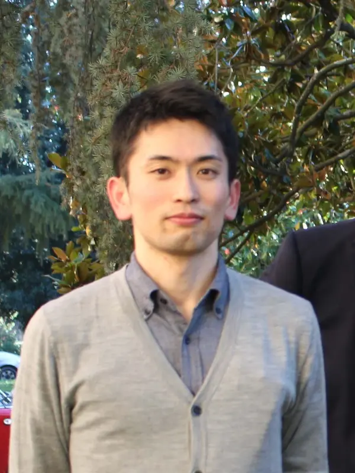

Kunihisa Okano
About
岡野 訓尚 (おかの くにひさ)
立命館大学 理工学部 電気電子工学科の准教授．博士(工学)． IEEE，計測自動制御学会，システム制御情報学会，電子情報通信学会，電気学会の会員．
Kunihisa Okano is an Associate Professor at the Department of Electrical and Electronic Engineering, College of Science and Engineering, Ritsumeikan University.
Contact
- 1-1-1 Noji-higashi, Kusatsu, Shiga 525-8577 Japan | 〒525-8577 滋賀県草津市野路東1-1-1
- kokano at fc.ritsumei.ac.jp
TAFRO症候群 指定難病認定嘆願署名
本件は研究活動とは無関係です． 過日，私の従兄がTAFRO症候群という病で亡くなりました． 症例が少なく，まだ治療法が確立されていない病です． この疾患が国の指定難病に追加され，治療法の研究や医療費負担の軽減につながるよう，キャッスルマン病患者会さまが，署名活動をされています． 趣旨にご賛同いただける方は，ぜひご署名をお願いいたします． オンライン署名 (Google form)
Biography
Current position
- Associate Professor, Department of Electrical and Electronic Engineering, College of Science and Engineering, Ritsumeikan University, since April 2021
Previous positions
- October 2016–March 2021, Assistant Professor, Department of Intelligent Mechanical Systems, Okayama University
- April 2016–September 2016, Assistant Professor, Department of Electrical Engineering, Tokyo University of Science
- April 2014–March 2016, The Japan Society for the Promotion of Science (JSPS) Postdoctoral Fellow for Research Abroad
- September 2013–March 2016, Visiting scholar, Electrical and Computer Engineering, University of California, Santa Barbara (Host: Prof. Joao P. Hespanha)
Education
- September 2013, Doctor of Engineering, Department of Computational Intelligence and Systems Science, Tokyo Institute of Technology (Advisor: Prof. Hideaki Ishii)
- Thesis: Networked control of uncertain systems under communication constraints
- March 2008, Master of Information Science and Technology, Information Physics and Computing, University of Tokyo (Advisor: Prof. Shinji Hara)
- Thesis: Sensitivity analysis of networked control systems via an information theoretic approach (in Japanese)
- March 2006, Bachelor of Engineering, Systems Science, Osaka University (Advisor: Prof. Shigeru Yamamoto)
- Thesis: Controller tuning based on a pair of reference output and experimental data (in Japanese)
Employment
- April 2008–September 2010, Systems Engineer at NTT DATA Corporation
Service
- June 2025–present, Editorial Committee of IEICE Transactions on Fundamentals of Electronics, Communications and Computer Sciences, Associate Editor | 2025年6月–現在, 電子情報通信学会 基礎・境界ソサイエティ和文論文誌, 編集委員
- 2025年3月–現在, 計測自動制御学会 制御部門, 副幹事
- 2023年3月–現在, 計測自動制御学会 論文集, アソシエイトエディタ
- 2022年6月–現在, 一般社団法人 電子情報通信学会 高信頼制御通信研究会, 幹事
- January 2021–present, IFAC Technical Committee on Networked Systems (TC 1.5), Member
- 2024年6月–2025年3月, 第12回 計測自動制御学会制御部門マルチシンポジウム, 実行委員
- 2022年6月–2024年5月, 一般社団法人 電気学会 関西支部, 協議員
- 2022年6月–2023年3月, 第10回 計測自動制御学会制御部門マルチシンポジウム, 幹事
- 2020年1月–2022年12月, 公益社団法人 計測自動制御学会 制御部門, 事業委員
- 2021年11月–2022年5月, 第66回 システム制御情報学会研究発表講演会, 実行委員
- 2020年1月–2022年1月, 公益社団法人 計測自動制御学会 中国支部, 運営委員
- 2020年6月–2021年5月, 第65回システム制御情報学会研究発表講演会, 実行委員
- 2019年1月–2020年1月, 公益社団法人 計測自動制御学会 中国支部, 庶務幹事
- 2018年3月–2019年5月, 第63回 システム制御情報学会研究発表講演会, 実行委員
- 2018年7月–2019年1月, 公益社団法人 計測自動制御学会 中国支部, 会計幹事
- 2016年10月–2017年3月, 第4回 計測自動制御学会制御部門マルチシンポジウム, 実行委員
Awards
- システム制御情報学会 学会賞 論文賞, 2024年5月24日 (共著論文に対して)
- 計測自動制御学会 著述賞, 2021年9月9日 (共著書「ネットワーク化制御（コロナ社）」に対して)
- 岡山大学工学部 教育貢献賞, 2021年3月3日 (亀川哲志先生, 松野隆幸先生, 脇元修一先生, 戸田雄一郎先生, 山口大介先生と共に, ロボット教材を活用したリモート学生実験メニュー開発への貢献に対して)
- 岡山大学工学部 社会貢献賞, 2020年3月4日 (松野隆幸先生, 脇元修一先生, 亀川哲志先生と共に, 制御工学・システム工学分野の講演会開催等学会活動への貢献に対して)
- 岡山大学工学部 ベストティーチャー賞, 2019年3月6日
- Best Student Paper Award Finalist at 12th European Control Conference, July 2013
- 計測自動制御学会制御部門研究奨励賞, 2013年3月 (第12回制御部門大会における発表に対して)
Fellowships
- April 2014–March 2016, Postdoctoral Fellowships for Research Abroad from JSPS
- April 2012–March 2014, Research Fellowships for Young Scientists from JSPS